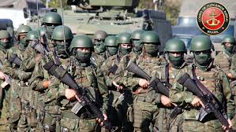

Corpo de Fuzileiros Navais
A morte que vem do mar!

Pelotão de Fuzileiros Navais realizando desfile de demonstração de força operativa
Linha do tempo do Corpo de Fuzileiros Navais
- 1808: As tropas da Brigada Real da Marinha de Portugal chegam ao Brasil, acompanhadas da Família Real Portuguesa.
- 1864: O contingente da Brigada Real de Marinha passa a ser chamado de "Batalhão Naval".
- 1895: O contingente da Brigada Real de Marinha passa a ser chamado de "Corpo de Infantaria da Marinha".
- 1924: O contingente da Brigada Real de Marinha passa a ser chamado de "Regimento Naval".
- 1932: O contingente da Brigada Real de Marinha passa a ser chamado de "Corpo de Fuzileiros Navais".
- 1943: A Escola Naval inicia o curso regular de Aspirantes Fuzileiros Navais.
- 1949: É criado o posto de Vice-Almirante no CFN.
- 1980: É criado o posto de Almirante-de-Esquadra no CFN.
- 1971: É criado o Batalhão de Operações Especiais de Fuzileiros Navais (BtlOpEspFuzNav).